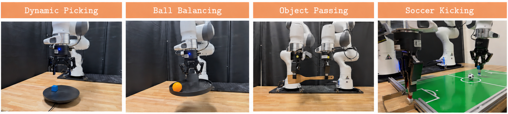
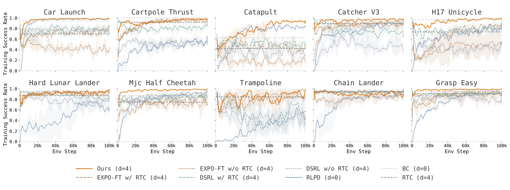

Inference LatencyOnline RLAction EditingAsync InferenceReal-Time Control
제출: 2026년 9월 16일 · 실기 DROID 단일팔 30Hz · VLA 추론 약 67ms · 온라인 데이터 10분
한 줄 요약 (TL;DR)
큰 VLA는 한 번 생각하는 데 약 67ms가 걸리는데 로봇은 33ms마다 명령을 내야 한다. 그래서 실제로 실행되는 행동은 이미 3~5스텝 전에 본 화면을 보고 정한 것이 된다 — 공이 굴러가는 동안 눈을 감고 팔을 뻗는 셈이다. 이 논문은 느리지만 똑똑한 생성과 빠르지만 작은 수정을 분리한다. 무거운 VLA는 백그라운드에서 미리 후보 행동 묶음을 여러 개 만들어 두고, 실행 직전에 1ms도 안 걸리는 작은 편집 정책이 가장 최신 화면을 보고 그 후보를 손본 뒤 가장 좋아 보이는 것을 고른다. 온라인 강화학습으로 사람 개입 없이 10분 학습해, 실기 4개 태스크 평균 성공률이 42% → 97%(30회 중 12.5 → 29회)가 됐다.
1배경 · 문제의식
VLA(Vision-Language-Action, 카메라 영상과 말로 된 지시를 받아 로봇 움직임을 직접 출력하는 모델)는 클수록 잘하지만 그만큼 느리다. 저자들의 서버에서 한 번 추론에 약 67ms가 걸리는데, 로봇 제어는 30Hz(33ms마다 한 번)로 돌아간다. 계산이 끝났을 때는 이미 3스텝(67ms)이 지나 있고, 지연을 더 주면 5스텝(167ms)까지 벌어진다.
왜 이게 치명적인가: 지금 실행되는 행동이 지금 상태가 아니라 d스텝 전 상태를 보고 정해진 것이 된다. 논문 표현으로 "the action at time t is actually a function of st−d" — 즉 현재 상태만 보면 다음이 결정된다는 마르코프 성질이 깨진다. 강화학습은 이 성질을 전제로 하므로 그대로 적용하면 학습이 무너진다. 공 받기·굴러가는 물체 잡기처럼 반응성이 생명인 태스크에서 특히 심하다.
2핵심 Contribution
"느린 생성"과 "빠른 수정"의 분리 — 무거운 VLA는 미리 백그라운드에서 후보를 만들어 두고, 실행 직전에 작은 편집 정책이 최신 화면을 보고 손본다. VLA의 좋은 행동 습관은 유지하면서 관측→행동 지연을 1ms 이하로 줄인다.
지연이 있어도 되는 온라인 RL 레시피 — 편집 정책·가치함수만 학습하고 VLA 본체는 사실상 고정. 성공 여부만 알려주는 0/1 보상으로, 사람 개입 없이 에피소드마다 갱신한다.
노이즈 공간 사전 선별로 계산 절약 — 후보를 32개까지 늘리면서도 VLA를 32번 다 돌리지 않는다. 노이즈 단계에서 먼저 걸러낸 뒤 한 번만 디코딩해, 같은 계산량으로 훨씬 빨리 학습한다.
3Method
출발점: EXPO-FT의 두 정책 구조
기반이 되는 EXPO-FT는 정책을 둘로 나눈다. 기본 정책(큰 사전학습 VLA)이 행동을 내놓고, 편집 정책(작은 MLP)이 거기에 ±β 범위로 제한된 보정값을 더한다. 그다음 가치함수 Q(어떤 상태에서 어떤 행동이 얼마나 좋은지 점수 매기는 함수)가 원본과 편집본 중 점수가 높은 쪽을 고른다.
왜 "편집"인가: 큰 VLA를 직접 강화학습으로 고치면 비싸고, 애써 배운 행동 습관이 망가지기 쉽다. 대신 출력에 작은 보정만 얹으면 원본의 좋은 점은 유지하면서 값싸게 개선할 수 있다. 보정 범위를 ±β로 묶는 것도 원본에서 너무 벗어나지 않게 하려는 장치다.
이 논문의 핵심: 두 단계를 시간축에서 떼어놓기
① 느린 단계 — 미리, 백그라운드에서. 현재 실행 중인 행동 묶음이 d스텝 남았을 때 VLA 추론을 미리 시작한다. 이때 지금 실행 중인 행동들을 조건으로 함께 넣어(이어지는 동작이 되도록) 후보 묶음을 N개 생성한다. 단 추론이 끝난 뒤 시점에 해당하는 구간만 쓴다 — 계산하는 동안 지나갈 구간은 어차피 못 쓰기 때문.
② 빠른 단계 — 실행 직전, 최신 화면으로. 실제 실행 시점이 되면 그 순간의 관측을 편집 정책에 넣어 N개 후보를 각각 손보고, 가치함수가 그중 최고를 고른다. 이 편집·선택은 1ms 미만이라 지연이 사실상 없다. 그동안 VLA는 이미 다음 묶음을 만들고 있다.
직관: 요리사(VLA)가 밑작업을 미리 여러 벌 해두면, 주문이 들어온 순간에는 간만 맞추면 된다. 무거운 일은 미리, 최신 정보가 필요한 일은 마지막 순간에 — 그래서 "지금 화면"을 반영하면서도 큰 모델의 표현력을 잃지 않는다.
온라인 RL — 무엇을 학습하나
시작점
시연으로 지도학습만 한 VLA(성공률 약 30%)에서 출발
학습 대상
가치함수 Q, 편집 정책, 노이즈 공간 선별기
고정
VLA 본체 (성공한 에피소드에 한해 선택적으로만 미세조정)
보상
성공하면 1, 아니면 0인 희소 이진 보상만 사용
사람 개입
없음 — 에피소드마다 자동 갱신
노이즈 공간 사전 선별
후보를 N개 만들려면 원래 VLA를 N번 돌려야 해서 비싸다. 이 논문은 완전히 그려내기 전 단계(노이즈)에서 먼저 후보를 걸러내고, 살아남은 것만 한 번 디코딩한 뒤 K개의 편집본을 만들어 최종 선택한다. 덕분에 N=32처럼 큰 값을 써도 계산이 감당된다.
4실험 결과
실기 4개 태스크 (DROID 단일팔, 태스크당 30회)
네 태스크는 모두 움직이는 대상을 다룬다 — 회전판 위 블록 집기, 회전판 위 탁구공 균형 잡기, 움직이는 팔에서 물건 받기, 움직이는 수비수를 피해 공 차 넣기.
태스크
지도학습만
DSRL+RTC
EXPO-FT
EXPO-FT+RTC
Real-Time EXPO-FT
움직이는 물체 집기
19/30
25/30
21/30
24/30
30/30
공 균형 잡기
8/30
15/30
18/30
23/30
28/30
물건 주고받기
10/30
23/30
19/30
27/30
30/30
공 차 넣기
13/30
17/30
17/30
26/30
28/30
평균
12.5/30 (42%)
20/30
18.8/30
25/30
29/30 (97%)
온라인 학습은 10분으로 제한했고 사람 개입이 없다. 42%→97%는 이 평균값 기준이다.
시뮬레이션 (Kinetix 10개 동적 환경, 4스텝 지연)
방법
평균 성공률
비고
Real-Time EXPO-FT
96.2%
4스텝 지연 상태
EXPO-FT + RTC
81.7%
−14.5%p
RLPD (지연 0, 상태 기반)
81.4%
지연이 없는데도 낮음
DSRL + RTC
76.1%
−20.1%p
주목할 점은 지연이 전혀 없는 RLPD보다도 높다는 것이다(96.2% vs 81.4%). 지연을 잘 다루는 것을 넘어, 큰 VLA의 행동 사전지식을 활용하는 이득이 따로 있음을 시사한다.
5Ablation
노이즈 공간 선별의 효과: 같은 계산량에서 선별을 쓸 때 학습 효율이 뚜렷이 높다. 이것이 있어야 N=32 같은 큰 후보 수가 실용적이 된다.
지연이 커질수록 격차가 벌어진다: 지연을 늘려가며 비교하면 RTC 계열은 성능이 떨어지는데 Real-Time EXPO-FT는 안정적으로 유지된다.
환경이 빨라질수록 격차가 벌어진다: 물건 주고받기에서 전달 속도를 올리면 EXPO-FT+RTC는 떨어지지만 이 방법은 거의 100%를 유지한다. 반응성이 요구될수록 이점이 커진다는 뜻.
6핵심 Figure / Table

Figure 4 — 실기 평가 태스크 4종. 왼쪽부터 회전판 위 블록 집기, 회전판 위 공 균형 잡기, 움직이는 팔에서 물건 받기, 움직이는 수비수를 피해 공 차 넣기. 넷 다 대상이 계속 움직여 지연에 취약한 설정이다. (출처: arXiv:2609.18207)

Figure 3 — Kinetix 10개 환경의 학습 곡선. 세로 점선은 지도학습 기준선(지연 0과 4스텝)을 나타낸다. 지연 4스텝 조건에서도 Real-Time EXPO-FT가 다른 방법들 위로 올라간다. (출처: arXiv:2609.18207)